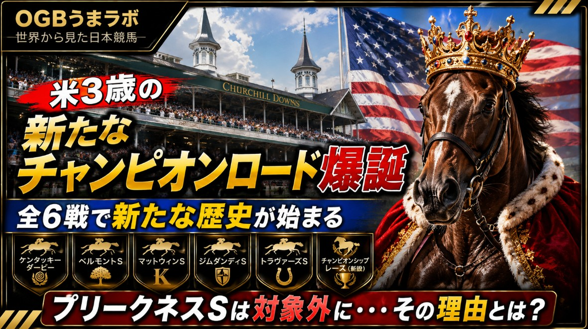

この記事はXに掲載された当時の原文です。情報は掲載時点の内容です。
米3冠レースが消滅！？新たな3歳チャンピオンロードが誕生した理由
州が8500万ドルで守ったプリークネスS。その4日後、米競馬界で何が起きたのか
先日、うまラボでは「メリーランド州が8500万ドル（約136億円）を投じ、プリークネスSの知的財産を取得した」というニュースを紹介しました。
当時の記事では、州がなぜここまでしてプリークネスSを守ろうとしたのか、その背景を中心にお伝えしました。
▼前回の記事はこちら
https://
x.com/gichu_omoto/st
atus/2070650480288817630
…
しかし、その時点ではまだ見えていなかったことがあります。
メリーランド州がプリークネスSを守った、その先に何が待っているのか。
その答えは、わずか4日後に示されました。
チャーチルダウンズ社（CDI）とニューヨーク競馬協会（NYRA）は2027年から、新たな3歳王者決定シリーズ「サラブレッドチャンピオンシップシリーズ」を創設すると発表しました。
ところが、そのシリーズからアメリカ三冠競走の第2戦・プリークネスSの名前は消えていました。
現地メディアを読み進めると、この発表を単なる新シリーズ創設ではなく、「アメリカ競馬の勢力図が変わる出来事」と受け止める論調が目立ちます。
まず強い言葉で反応したのが、ニューヨーク州の有力紙Times Unionです。
コラムニストのTeresa Genaro氏は、メリーランド州が8500万ドルでCDIによる買収計画を阻止した直後に、プリークネスSを含まない新シリーズが発表されたことについて、
「チャーチルダウンズの今回の動きを、意地悪で報復的な行為と見るのは難しくない」
と論じています。
今回調べた現地メディアの中でも、最も踏み込んだ論調でした。
一方、競馬専門メディアPaulick Reportが注目したのは、別のポイントでした。
同メディアはCDIに対し、
「もしメリーランド州が優先購入権を行使せず、CDIがプリークネスSの知的財産を取得していたとしても、今回と同じシリーズ構成だったのか」
という質問を送りました。
しかし、その問いに対する明確な回答はありませんでした。
Paulick Reportは、この「答えなかったこと」を今回の記事の中心テーマとして取り上げています。
その一方で、運営側の説明も紹介されています。
Times Unionのニュース記事では、NYRAのデビッド・オルークCEOが、
「このシリーズは三冠競走には全く触れるものではない」
と説明しています。
さらに、このシリーズはケンタッキーダービーから始まる3歳シーズンを秋まで盛り上げることが目的であり、三冠競走を置き換えるものではないとも語っています。
では実際のシリーズ構成はどうなっているのでしょうか。
対象となるのは、
ケンタッキーダービー
ベルモントS
マットウィンS
ジムダンディS
トラヴァーズS
新設チャンピオンシップレース
の全6競走です。
ここで気付くのは、すべてCDIまたはNYRAが管理する競馬場のレースだけで構成されていることです。
一方、プリークネスSだけでなく、ハスケルSやペンシルベニアダービーなど、他団体が運営する主要競走はすべて対象外となりました。
現地報道では、「アメリカ競馬全体の新シリーズ」というより、「CDIとNYRAによる新たな3歳シリーズ」という見方が多く見られました。
さらに興味深かったのは、シリーズ発表までの経緯です。
メリーランド州の競馬関係者は、現地報道で「シリーズについては発表で初めて知った」とコメントしています。
またNYRA側も、プリークネスS、ハスケルS、ペンシルベニアダービーの関係者とは、発表前に協議していなかったことを認めています。
つまり、シリーズの骨格はCDIとNYRAだけで作られ、その後に公表されたことになります。
ここまで複数の現地メディアを読み比べると、それぞれ着目点は異なります。
Times Unionは、買収阻止からわずか4日後というタイミングに強い疑問を投げ掛けました。
Paulick Reportは、CDIが核心となる質問へ答えなかったことを追及しました。
一方でNYRAは、一貫して「三冠競走とは別の年間シリーズ」という説明を続けています。
そして、この発表に対するアメリカ競馬ファンの反応も大きく割れています。
Times Unionの記事では、著名オーナーのマイク・リポール氏が自身のXで
「これは競馬界を変えるゲームチェンジャーになり得る」
と投稿し、業界全体が手を取り合って新しいシリーズを作ることを歓迎しました。
一方、海外最大級の競馬コミュニティの一つであるRedditでは、
「このニュースでトリプルクラウンは事実上終わった」
というタイトルのスレッドが立ち、
「歴史よりビジネスを優先した」
「プリークネスは切り捨てられた」
「三冠競走の価値が薄れてしまう」
といった声が数多く投稿されています。
歓迎する関係者がいる一方で、伝統が失われることに危機感を抱くファンも少なくないようです。
前回の記事では、メリーランド州は8500万ドルを投じてプリークネスSを守った、と紹介しました。
しかし今回、現地メディアや競馬ファンの反応を読み進めると、そのわずか4日後には、プリークネスSを通らなくても3歳王者を目指せる新たな舞台が誕生しました。
歓迎する声。
歴史が失われることを惜しむ声。
そして、その両方を伝える現地メディア。
2027年から始まるこの新シリーズは、新たな3歳王者決定戦の誕生というだけではなく、アメリカ競馬が「伝統」と「新しいビジネスモデル」のどちらへ重心を置いていくのかを占う、大きな転換点として注目されることになりそうです。
2026.8.5 うまラボ編集部
元記事：Xで公開した記事